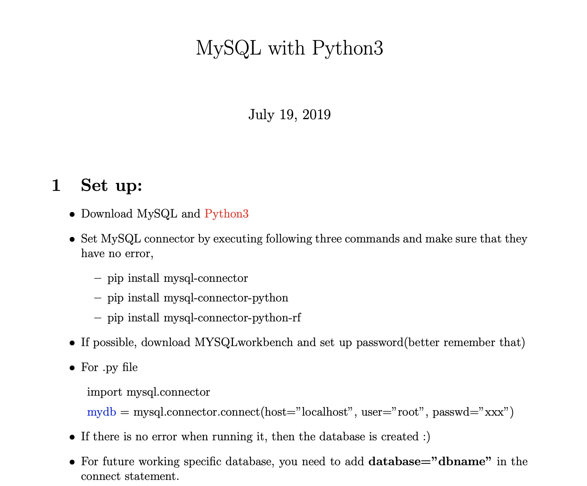

<mat-card class="max-width-500">
  <mat-card-header>
    <mat-card-title>Python with MySQL</mat-card-title>
  </mat-card-header>
  <mat-card-content>
    <li>Python can be used in database applications. One of the most popular databases is MySQL.</li>
    <li>This is the file that I documented for self-starter. </li>
    <li>If you want to learn more, please refer to
      <a href="https://www.w3schools.com/python/python_mysql_getstarted.asp" target="_blank">WS3 School</a>
    </li>
  </mat-card-content>
  <div class="display-block space-between">
    
  </div>
  <mat-card-actions>
    <button mat-button (click)="openFile()">Preview</button>
    <button mat-button (click)="downloadFile()">Download</button>
  </mat-card-actions>
</mat-card>
